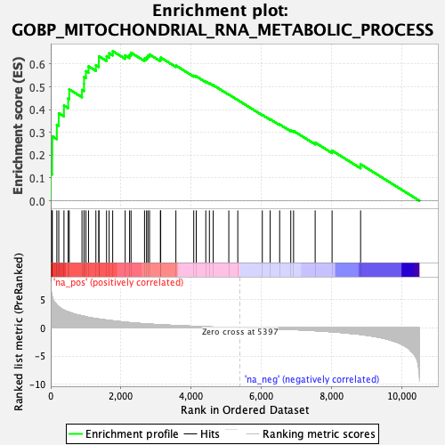
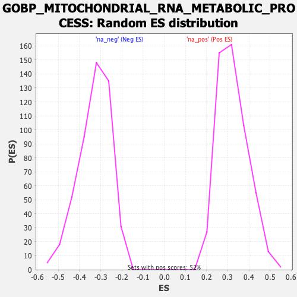

| Dataset | qlf.KOd4vsWTd4_gsea_score |
| Phenotype | NoPhenotypeAvailable |
| Upregulated in class | na_pos |
| GeneSet | GOBP_MITOCHONDRIAL_RNA_METABOLIC_PROCESS |
| Enrichment Score (ES) | 0.65685433 |
| Normalized Enrichment Score (NES) | 2.0339618 |
| Nominal p-value | 0.0 |
| FDR q-value | 3.7690287E-4 |
| FWER p-Value | 0.041 |

| SYMBOL | RANK IN GENE LIST | RANK METRIC SCORE | RUNNING ES | CORE ENRICHMENT | |
|---|---|---|---|---|---|
| 1 | CHCHD10 | 1 | 7.860 | 0.1189 | Yes |
| 2 | MRPL12 | 40 | 5.616 | 0.2003 | Yes |
| 3 | PUS1 | 44 | 5.471 | 0.2828 | Yes |
| 4 | TBRG4 | 174 | 4.094 | 0.3325 | Yes |
| 5 | FASTKD3 | 229 | 3.759 | 0.3842 | Yes |
| 6 | TRMT5 | 377 | 3.157 | 0.4180 | Yes |
| 7 | ELAC2 | 498 | 2.841 | 0.4495 | Yes |
| 8 | SUPV3L1 | 528 | 2.791 | 0.4890 | Yes |
| 9 | TRMT10C | 891 | 2.133 | 0.4867 | Yes |
| 10 | LRPPRC | 949 | 2.066 | 0.5125 | Yes |
| 11 | PNPT1 | 951 | 2.066 | 0.5437 | Yes |
| 12 | TARS2 | 1004 | 1.981 | 0.5687 | Yes |
| 13 | FASTKD2 | 1077 | 1.863 | 0.5901 | Yes |
| 14 | EARS2 | 1287 | 1.640 | 0.5949 | Yes |
| 15 | TRNT1 | 1371 | 1.564 | 0.6107 | Yes |
| 16 | TEFM | 1373 | 1.563 | 0.6342 | Yes |
| 17 | SLIRP | 1591 | 1.378 | 0.6344 | Yes |
| 18 | PPARGC1B | 1665 | 1.326 | 0.6475 | Yes |
| 19 | GRSF1 | 1766 | 1.252 | 0.6569 | Yes |
| 20 | MTERF4 | 2122 | 0.996 | 0.6380 | No |
| 21 | TFB1M | 2247 | 0.927 | 0.6402 | No |
| 22 | METTL4 | 2289 | 0.901 | 0.6499 | No |
| 23 | POLRMT | 2673 | 0.731 | 0.6244 | No |
| 24 | YARS2 | 2731 | 0.701 | 0.6295 | No |
| 25 | HSD17B10 | 2769 | 0.686 | 0.6364 | No |
| 26 | MTO1 | 2816 | 0.664 | 0.6420 | No |
| 27 | FASTKD1 | 3125 | 0.554 | 0.6210 | No |
| 28 | PDE12 | 3134 | 0.551 | 0.6286 | No |
| 29 | SLC25A33 | 3567 | 0.408 | 0.5934 | No |
| 30 | DARS2 | 4076 | 0.270 | 0.5490 | No |
| 31 | TFB2M | 4147 | 0.253 | 0.5461 | No |
| 32 | TRMT61B | 4419 | 0.187 | 0.5231 | No |
| 33 | FASTK | 4522 | 0.163 | 0.5158 | No |
| 34 | RPUSD4 | 4631 | 0.139 | 0.5076 | No |
| 35 | AARS2 | 5075 | 0.056 | 0.4661 | No |
| 36 | TRIT1 | 5331 | 0.014 | 0.4419 | No |
| 37 | FASTKD5 | 6030 | -0.103 | 0.3768 | No |
| 38 | SARS2 | 6254 | -0.146 | 0.3577 | No |
| 39 | CDK5RAP1 | 6524 | -0.205 | 0.3351 | No |
| 40 | PRKAA1 | 6841 | -0.285 | 0.3092 | No |
| 41 | TFAM | 6921 | -0.307 | 0.3063 | No |
| 42 | FOXO3 | 7536 | -0.507 | 0.2553 | No |
| 43 | WARS2 | 8018 | -0.701 | 0.2200 | No |
| 44 | MTERF2 | 8831 | -1.181 | 0.1602 | No |
